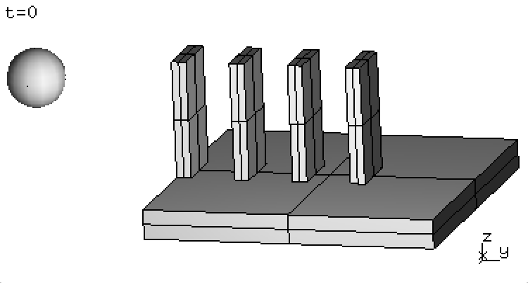

Export domino example¶
The source code below demonstrate the XDMF export functionality using a domino toppling example. Lines 1–16 set up the simulation. Lines 18–23 either export the initial geometry or run simulation. Lines 25–40 exemplify the remaining export capability. Within Solfec sources this example can be found as inp/devel/xdmf-export.py.
1 2 3 4 5 6 7 8 9 10 11 12 13 14 15 16 17 18 19 20 21 22 23 24 25 26 27 28 29 30 31 32 33 34 35 36 37 38 39 40 | # Set up domino toppling example
solfec = SOLFEC ('DYNAMIC', 1E-3, 'out/domino')
GRAVITY (solfec, (0, 0, -9.81))
mat = BULK_MATERIAL (solfec, model = 'KIRCHHOFF',
young = 15E9, poisson = 0.3, density = 1.8E3)
SURFACE_MATERIAL (solfec, model = 'SIGNORINI_COULOMB',
friction = 0.5, restitution = 0.25)
cube = HEX ([0, 0, 0, 1, 0, 0, 1, 1, 0, 0, 1, 0, 0, 0, 1,
1, 0, 1, 1, 1, 1, 0, 1, 1], 2, 2, 2, 1, [1]*6)
BODY (solfec, 'OBSTACLE', SCALE(COPY(cube), (1, 1, 0.1)), mat)
for i in range (0, 4):
piece = SCALE (COPY(cube), (0.2, 0.05, 0.4))
TRANSLATE (piece, (0.4, i*0.2, 0.1))
BODY (solfec, 'RIGID', piece, mat, label = 'Domino' + str(i+1))
ball = BODY (solfec, 'RIGID', SPHERE ((0.5, -0.5, 0.4), 0.1, 3, 3), mat)
INITIAL_VELOCITY (ball, (0, 3, 0), (0, 0, 0))
# Export initial state or run simulation
argv = NON_SOLFEC_ARGV()
if argv != None and '--geom0' in argv:
XDMF_EXPORT (solfec, 0.0, 'out/xmftest0')
solfec.cleanup = 'ON'
else: RUN (solfec, NEWTON_SOLVER(), 1.0)
# Export results
if solfec.mode == 'READ' and not VIEWER():
# export simulation state at t = 0.5
XDMF_EXPORT (solfec, 0.5, 'out/xmftest1')
# export entire simulation:
XDMF_EXPORT (solfec, (0.0, 1.0), 'out/xmftest2')
# 101 time instants:
times = [0.01*i for i in range(0, 101)]
# export all bodies at 101 times:
XDMF_EXPORT (solfec, times, 'out/xmftest3')
# export a subset of bodies at 101 times:
XDMF_EXPORT (solfec, times, 'out/xmftest4',
subset = [(0.4, 0, 0, 0.6, 0.05, 0.2), 'Domino2', ball])
# export Domino2 and Domino3 two attributes at 101 times:
XDMF_EXPORT (solfec, times, 'out/xmftest5',
subset = 'Domino[2,3]', attributes = ['VELO', 'RELV'])
|
Assuming we are inside of Solfec source directory, this example can be executed as follows:
./solfec inp/devel/xdmf-export.py --geom0
to first demonstrate the export of initial geometry in ‘WRITE’ mode. In this case no calculations were done and only one, initial state was saved in out/xmftest0 directory. The saved files are:
- out/xmftest0/xmftest0_grids.xmf – storing grids markup
- out/xmftest0/xmftest0_spheres.xmf – storing spheres markup
- out/xmftest0/xmftest0.h5 – storing all remaining data
We note that:
solfec.cleanup = 'ON'
in line 22 allows Solfec to delete the output directory out/domino in case no results were saved. This is just a matter of convenience, allowing us to run Solfec without the –w switch:
./solfec inp/devel/xdmf-export.py
to perform calculations, by invoking line 23. Calculations finish after several seconds and results are saved into the out/domino directory. Table 26 includes several screenshots captured using a viewer session:
./solfec inp/devel/xdmf-export.py -v
|  |  |
 |
{kind=link}
{kind=link}
We then need to run Solfec one last time:
./solfec inp/devel/xdmf-export.py
in order to execute lines 25–40 and output the out/xdmftest[1–5] directories. Recall, that when results are present Solfec runs in the ‘READ’ mode, facilitating access to post–processing routines.
The first export instance in line 28:
XDMF_EXPORT (solfec, 0.5, 'out/xmftest1')
outputs the simulation state at time \(t = 0.5\) into the out/xmftest1 directory. The second export instance in line 30:
XDMF_EXPORT (solfec, (0.0, 1.0), 'out/xmftest2')
outputs the entire 1000 steps of the simulation into the out/xmftest2 directory. We note that in both cases an extra file has been created in the output directories, e.g.:
- out/xmftest2/xmftest2_constraints.xmf – storing constraints markup
Exporting all time steps of a simulation may not always be desirable. Sometimes we might like to store more results within the large hard drives of a HPC facility and only export subsets for local post–processing. In line 32 we define a list of 101 time instants:
times = [0.01*i for i in range(0, 101)]
which allows us to export only the nearest saved simulation states in line 34:
XDMF_EXPORT (solfec, times, 'out/xmftest3')
Finally, instead of exporting data for all bodies defined within our model, it is also possible to use a subset of bodies and further specialise our export. This is done in the fourth export instance in line 36:
XDMF_EXPORT (solfec, times, 'out/xmftest4',
subset = [(0.4, 0, 0, 0.6, 0.05, 0.2), 'Domino2', ball])
where we used a combination of a bounding box, a body label, and a BODY object to define a subset. Bodies, whose bounding boxes overlap the box defined by two corners \([0.4, 0, 0]\) and \([0.6, 0.05, 0.2]\) at time \(t = 0\) will be exported together with the domino piece labeled ‘Domino2’ and the ball used to initially topple the domino set.
The last example, in line 39, demonstrates the usage of a regular expression based subset definition:
XDMF_EXPORT (solfec, times, 'out/xmftest5',
subset = 'Domino[2,3]', attributes = ['VELO', 'RELV'])
together with a non-default definition of exported attributes. In this case domino pieces labeled ‘Domino2’ and ‘Domino3’ will be exported. Only the velocity field will be saved as a grid attribute and only relative constraint velocities will be saved as constraints attributes.
In the following section we are going to use Paraview in order to view some of the XDMF files generated by the current example.